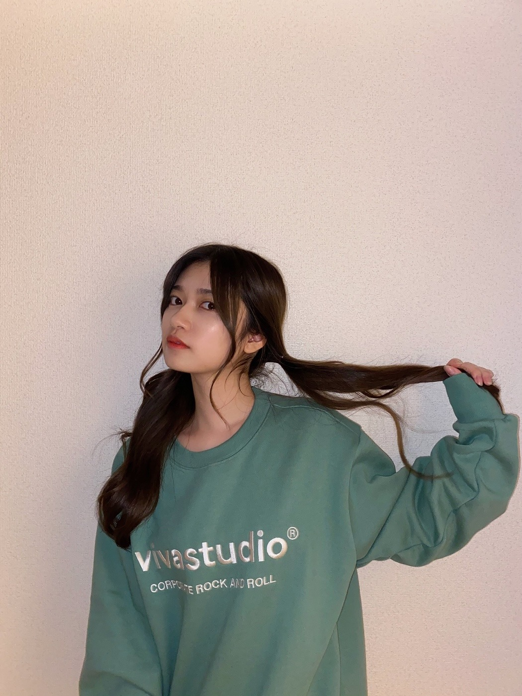
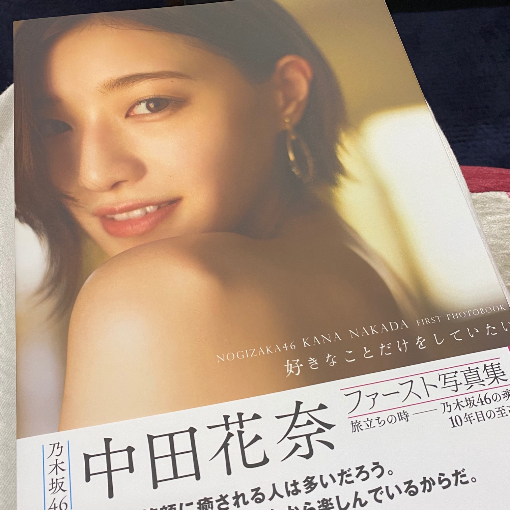

2020/1023Fri10月

小さな頃から夢をみたら
お母さんに報告するのが朝の日課でした。
朝からテンションは常に一定です。
寝起きで踊れと言われても踊れるくらい一定です。
最近は歯が抜ける夢をみて
怖くなりました。
しかも現実じゃあり得ないファンタジーな虫歯で
歯が取れてしまって
思い出すだけで鳥肌がとまらない夢でした。
皆さんも変な夢見ることありますか。？？
最近寒い日も多くなってきたので
体調には気をつけてくださいね。
お風呂浸かって温かくして沢山睡眠とって
インフルエンザにも勝てるように
今から体調管理しっかりとしたいです。☺️✨
Mステありがとうございました。
のぎおびありがとうございました。
選曲もとても大好きでした。
乃木坂のメンバーとしての白石さんとの
色々な最後の瞬間を噛み締めたいです。
かなさんには写真集サイン貰いました。☺️
皆さんには申し訳なさもありつつ自慢です。
お気に入りのページにサインもらいました。
ペロペロ。
表紙に貰ったら皆さんにも見せれたのカナ。
かなさん卒業されても
会うペロペロですよ。☺️✨

2020/10/23 19:30


コメント(610)
Instagramも勿論良きだけど、
ブログの特別感も良いなーと思ってますw
のぎおびみたよー！
非常に楽しめる時間を過ごせましたー！
まいやんの卒コンがいよいよですね。
ありきたりですが、残りわずかな日々を蘭世やメンバーみんなが充実した時間として過ごせることを願ってます！
リハーサルなど準備大変だと思うけど頑張ってね
今週ミーグリ参加するよー
モバメでお知らせ来てからずっと構えてました
ライブ楽しみにしてるね！
ユースケ
のぎおびとMステ最高でした。
明日の受験も頑張れそうです。
ありがとう蘭世。
早く会いたいよー！
ファッションがいい感じの
投稿してくれる
寺田蘭世さん
ブログ更新ありがとう(^^)
ツインテールがよく似合っているね⁉︎
蘭世ちゃんの写真集見たいなぁ〜(^^)♡
かなりんの写真集大切にしてあげてくださいね。ぺろぺろ〜
蘭世！ブログ更新ありがとう！！！
11日と17日のミーグリすごい楽しかった！
慣れなくて不安だったけど蘭世の顔見たらすごい嬉しくて楽しかったよ〜本当にありがとう〜
蘭世が大変なこともあると思うけど頑張ろうって言ってくれたから、毎日料理頑張ってるよ！！！
高校卒業したら遠征行くって約束も絶対守る！(^^)
あと、1日と8日にミーグリ残ってるからその時は何卒、、、(*^^*)
28日の卒業ライブも見ます！怪我と体調には気をつけてね！
本当にいつもしあわせと笑顔をありがとう！
これからもよろしくお願いします。！
いつもありがとう！
だいすき。！♡
あいら。
わかるわかる
俺もたまーにおかしな夢見たりするよw
そしてそれが正夢になった時なんか少しドキッとしたりする((*･ω･*))
Mステ観てたよ♪ 蘭世のこともちゃんと見てたからね(*´ー`*)
寒くなってきたね〜。朝なんてなかなか起きれなくなってきましたよw お互い体調管理には気をつけようね！！
謎の報告ごめんなさい笑
もう波乱の2020年も残り約2ヶ月となりましたね
色んなことがあった2020年
2期生ライブまだ諦めてません実現するまでは
実現したら立っていられなくなるほど号泣しそうです。
それくらい2期生が大好きです
Mステとのぎおび最高だったよ！
かなりんの写真集でお気に入りのページ気になるな！
またブログ更新されるの楽しみに待ってるね！
夢の話、メールでも教えてくれたやつやね！
ファンタジーな虫歯ってどんなのか気になる、、、笑
私は最近夢見てないかもです。
蘭世ちゃんも体調に気をつけてね！
来週はまいやんの卒コンもあるし、暖かくして元気でいてください☺️
のぎおび、Mステ、どちらも良かったです☺️
好きが溢れたよ！！！
サイン入り写真集、良いな〜メンバーの特権ですね◎
明後日、蘭世ちゃんとミーグリで会えるの楽しみにしてます♡
あ！お写真どれも可愛い☺️♡♡
お話会楽しめているよ
25日・1日もよろしくねー
大好きです。。。
ありがとう
喜章（よしあき）
ぎゅっと中身が一気に詰まったブログですね！
なんか、何かある時に必ず同じ夢を見たりします
あれはなんなんだろ〜〜
夢っていつの間にか忘れちゃうけど
それだけは鮮明に覚えてたり、、、
不思議ですよね
歯が抜ける夢辛い、、！(笑)
Mステものぎおびもお疲れ様でした
リアルタイムで見たよ〜
やっぱりオリジナルのポジションで
パフォーマンスしてる寺田さんが何より輝いてるし
個人的に選曲がとても好みで…
乃木坂っていいな〜と思いながら見てました！
卒コンももうすぐですね
のぎおび〜〜、フリートークが多くて嬉しかったです
ミーグリに行けない人間なので
色んなお話が聞けて幸せでした
また寺田さんとお話したいなぁ、、、
かなりんの写真集！サイン入りで貰ったんですね^^
良き良き〜〜
インスタの質問返しありがとう
実は一つコメント拾ってもらえて
とてつもなく幸せでした
ありがとう、ほんとに何でも頑張れる
今仕事が忙しくて毎日クタクタだけど
元気出ました！！！
そんでもってそのトレーナーめちゃくちゃかわいい
欲しい〜〜ってなりました
ツインテールも最高よ♡
ではまた！！
好きや〜〜
ゆうき(ゆっちゃん)
お話会楽しめているよ
25日・1日もよろしくねー
モバメでも言ってたね！！
夢って現実的なものも見るし非現実的なものも見るから面白いけどたまにやばいの見るよね()
自分が最近見た夢で嬉しかったのは握手会が再開されてヲタク友達だったり蘭世さんだったりと普通に話してだことです
昔まではこれが普通だったんだなーて思うと少し悲しくなりました。が、久々に蘭世さんと面と向かって話せたのは楽しかったです！内容は覚えてませんが
夢ってそんなものだよね
そして蘭世さんがブログに書いてるとおりつい昨日まで風邪をひいておりました。が、龍角散でなおしました()
これからもっと体調管理に気をつけないといけませんねw
Mステまいやんも素敵でしたか蘭世さんも素敵でした。
まいやんにも負けないくらい輝いて見えました。
これからの季節、時期、大変なこともあると思いますがお互い乗り越えていきましょう！！
蘭世さん大好きたよ！！
中田さんの写真集まだ買いに行けてません、はやく買いに行こうと思います
寺田さんが朝からテンションが一定なのはなんとなくイメージがつきますが踊れるほどなのはすごいですね、自分は朝はかなり機嫌が悪いと言われるので羨ましいです
最近はジムにサウナがあるのでトレ後に入るようにしました、帰りは暑すぎて車で冷房ガンガンにして帰ります
寺田さんも体調には気をつけてください
Mステは見逃しましたごめんなさい
怖い夢見るときありますよね。
夢占いするメンバーもいるみたいですよ。
選曲とてもよかったです。
もう少し長めに披露してほしいな～という気持ちもありましたが披露できるだけありがたいと思わないといけないですよね(/・ω・)/
蘭世ちゃんのお気に入りのページ是非聞いてみたいものです。
夢見たら報告ですか…僕はなんやろ、夢じゃないけど特別何かあったらぐらいしか親に報告とかはしないので、そういうのお話してるだけ凄い良いなぁって思います
たまに変な夢はみます
怖い夢見たら、1回夢占いしてみたら面白いんじゃないかな？
Mステのぎおびとお疲れ様です！
後ろのポジションでもしっかり見つけることが出来るぐらい、蘭世さんのダンスは惹きつけるものがあります
のぎおびもとっても可愛かったです！
かなりんとももうちょいだけ一緒に活動できると思うので
最後まで笑って送り出したいですね
大好きです。
ユウキ
Mステものぎおびも可愛かったです！
モバメもインスタもブログもいつもありがとうございます。
どれも更新してくださるといつも以上に頭の中が蘭世先生でいっぱいになります！
ありがとうございます。
広島住みの璃音
そして…Instagram開設一ヶ月おめでとうございます。!!!!
夢の話なのですが、乃木坂ちゃんのメンバーが出てきたことあります。「変な髪型～。」ってワシャワシャされてる謎の夢でした。笑
またコメントしますね。
僕も蘭世に会いたいよー。(・ε・)
うわーー、ツインテールかっこ可愛い(｡>﹏<｡)
今後も夢を教えてほしいよ(*´ω｀*)
歯が抜いた夢私も見たことある(;_;)
本当に思い出すと鳥肌立つよね(´；ω；｀)
カナから貰ったサインを見せないの(｡>﹏<｡)
今後もぺろぺろ仲良しで＼(^o^)／
これからも頑張って(/･ω･)/
かなりんに写真集もらったの羨ましいなー
もうすぐで卒業しちゃうという実感が湧きませんね
かなりんが卒業したらさゆりんご軍団の現役乃木坂メンバーは二人になっちゃいますね…
どんな形でさえさゆりんご軍団ライブ開催信じてますよ！
卒コンまでもう少しですね
体調に気をつけてください！
それでは！
悪の組織と戦う夢です。
普段は売れっ子､絵本作家の魔術師と
夜な夜な悪魔狩りをしているトンファー
使いの空手家に協力してもらって
悪の組織を倒しました。
まぁ最後は裁判だったんですけど…
相手の親玉がスキンヘッドでした。
頭が光ってて水晶みたいでした。
親水晶玉でした。
めでたしめでたし
ブログ更新ありがとうございます(*^^*)
Mステ見ました。
とっても可愛かったです^^*
虫歯の夢、モバメでも教えてくれたけどこわいね～。
あったかくて甘い飲み物を飲んだりしてリラックスしてね。
Mステ、のぎおびもお疲れ様でした！
ミーグリでMステの感想を蘭世ちゃんに伝えられて良かったですー。のぎおびのツインとっても可愛いかったよ:-)
かなさんの素敵な写真集、宝物だね！
どんどん寒くなってきたのであたたかくしてね。
大好きです。またね:-)
やぁ
ブログ更新ありがとう。
まずインスタのストーリーズの事から。
いや…あのさ…可愛いをさ…遥かに凌駕してくるってどういう事？
可愛いって言葉じゃもう表せれない位の可愛さ
ブログについて
写真！！！！！！！！！！！！！！！
めっちゃ可愛いやん
ツインテでおでこまで出しちゃって
ブレた後ろ姿も良き
夢の話はモバメでもしてたな
変な夢めっちゃ見るけど大体起きたら忘れててさ～
ふとした時にその夢を思いだすことある。
あと正夢をよく見る。
後で気付くんだけどな。
あ～この場面夢でみたな～って
そうやな～最近夜がよくに冷えるからな。
蘭世
Мステものぎおびもお疲れ様！
俺にとっても蘭世
あと少し乃木坂の白石さんとの時間を大切にな。
で卒業したらプライベートでも仲良くしてもらいなよ
花奈さんも写真集おめでとうやな
う～んそれは蘭世
共有出来たら嬉しいかもだけど、その思い出を俺は大事にして欲しいからお気に入りのページで良いと思う。
会うぺろぺろってなんや笑笑
最後に面白いワードぶっこんで来たな
メ―ルのお返事がまだ反映されてないのもあるから一個前のブログコメも反映したら言うから読んだってな
それじゃきっとまた後で(｡･ω･)ﾉﾞ
写真も沢山で、見応えありすぎで、嬉しいです。
のぎおびの蘭世も可愛すぎてあっという間に終わってたよ。
いつもありがとう！
ミーグリ楽しみにしてます！
よろしくお願い致します。
自分も以前歯が数本抜ける夢見ました！笑
体調に気をつけて頑張ろう！
ブログ更新ありがとう！
モバメで言ってた通り！ブログ更新したね！
モバメとブログでたくさん写真あげてくれてありがとう！！
インスタの更新もありがとう！！
いろいろな蘭世が見れて嬉しい！！
最近は夢を見たり見なかったりしてるなー
見る日は見るんだけど、見た夢の内容を起きたら忘れちゃうんよなー
なんかそれって不思議じゃない？
寝てる時は覚えてるのに起きたら忘れちゃう、なんでだろう？
起きても覚えてるような楽しい夢を見たい！！
最近は警察に捕まる夢を見ました、、
内容はよく覚えてないけど怖かったから夜中に起きちゃったよ！！
正夢にならないように気をつけます、、
Mステ見たよ！蘭世見つけたよ！
久しぶりに蘭世が踊ってる姿が見れてとても嬉しかった！！
蘭世はどこだって探してたんだけど、カメラがすぐに変わっちゃうからなかなか追うのが難しかった！！
でも久しぶりに蘭世が踊ってる姿が見れて、すごく勇気をもらったし、嬉しかった！ありがとう！！
のぎおびはごめん！バイトがあって見られなかった！！
またやる時があったらその時は見るね！
白石さんの卒業まで1週間切ったね、、
卒業コンサートまでもあと1週間切ったね、、
オンラインでの開催だけど、しっかりと見送りたい！！
かなさんのサインいいなー！！
自分もほしい！！
蘭世も体調には十分気をつけてね！
これからも応援するよ！
蘭世の勢いとまらんぜ！
今日も1日お疲れ様でした☀︎
お写真ありがとうございます☺️✨
トレーナー可愛い〜〜！
インスタの投稿で見たときから
シルエットも色も可愛い〜と思っておりました☺️
ツインテも可愛いです似合ってます好きです◎
インスタ，フォローさせていただいてます
いつも素敵な投稿，ストーリーありがとうございます☺️
蘭世ちゃん投稿してないかな〜って
こまめにチェックすることが日課になりました^ - ^
これからも投稿楽しみにしてますね✨
のぎおび観ました！
ファッションがとにかく素敵すぎました〜！❤︎
三つ編みにニット，オレンジ色のチークも可愛かったです！
相変わらずのふにゃっとした話し方や
ミーグリでのお話などなど
色んな話を聞けて楽しかったし癒されました☺️✨
猫語で初期の自己紹介…すき…可愛すぎたです…✊ ✨
急いで宿題を終わらせて1秒でも長くコメントを返してくれる
ところが蘭世ちゃんらしくてすきです☺️
幸せな時間をありがとう☺️✨
Mステもリアタイさせていただきました！
蘭世ちゃんのパフォーマンスはいつ観ても綺麗です
蘭世ちゃんがいるシンクロニシティはやっぱり素敵でした
わたしも選曲とてもすきでした
まいやんセレクトと聞いて，
いつもファンを第一に考えてくれる人柄に心温まりました☺︎
表紙のかなりん美しすぎて眩しいです
わたしは写真集のパネル観に行きました！
蘭世ちゃんは観に行きましたか？
まだ観に行けてないのなら，わたしも自慢です（笑）
いつまでも仲の良いペロペロでいてね☺️✨
では，またコメントするね
お互い体調崩さんようがんばりましょ！◎
いつもありがとう，だいすきです
さっこ
ツインテールが可愛すぎるんよ〜〜！！
その服も好きすぎるんよ〜〜！！
夢怖かったよね
僕はあんまり夢を見る方じゃないんだけれど、
たまに見る夢ってだいたいあんまり良くないから記憶に残っちゃうな〜
お母さんに報告してるんだね！
本当に家族と仲良いよね！
Mステおつかれさま〜
本当に意味のある出演だったね
白石さんの最後のMステに蘭世が出られて本当に良かった
白石さんと蘭世が同じ画角に映る時があって、
本当に感動した
ファンとしてとても嬉しいできごとだったよ
のぎおび楽しかったよ〜
蘭世のことを大大大好きになる30分でした
癒されたな〜〜
かなさん写真集のサインは羨ましすぎる！！
ミーグリ本当にありがとうね
一年以上ぶりに蘭世と顔を合わせた時のあの感覚は忘れられません
あのドキドキ感、蘭世の優しさ、あたたかさ
距離は離れているはずなのに、
心は離れていない
そんな気がしました
ありがとう
あなたを応援できている今が幸せです
今週末もよろしくね！！
蘭世も体調には気を付けてね
人として大好きです
コメントする